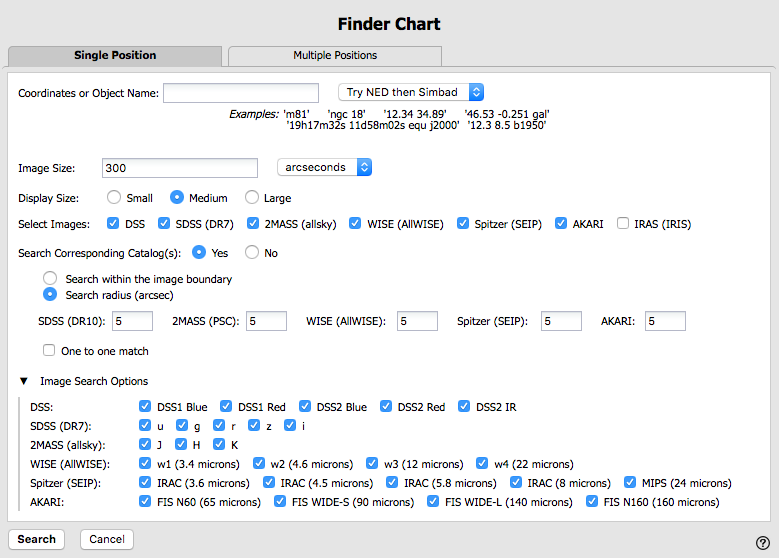
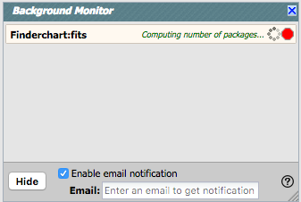
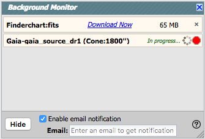

Besides the online help (also available as a PDF), there are also
Finder Chart video tutorials, available at the IRSA YouTube channel  . There is a playlist that
collects together all of the Finder Chart videos. Also see the list
of "micro-tutorials" relevant for more than one tool, and the list of
tutorials using more than one tool.
. There is a playlist that
collects together all of the Finder Chart videos. Also see the list
of "micro-tutorials" relevant for more than one tool, and the list of
tutorials using more than one tool.
Contents of page/chapter:
+How to Search
+Searching on multiple targets -- Batch mode
+Retrieving and Using Catalogs
+Getting More Help
+Downloading data
+Background Monitor

Name or position. By default, it assumes you are searching on a single target. You may enter a target name, and have either NED-then-Simbad or Simbad-then-NED resolve the target name into coordinates. Alternatively, you may enter coordinates directly. These coordinates can be in decimal degrees or in hh:mm:ss dd:mm:ss format. By default, it assumes you are working in J2000 coordinates; you can also specify galactic, ecliptic, or B1950 coordinates as follows:
As you are completing a valid coordinate entry, Finder Chart echoes back to you what it thinks you are entering. Look right below the box in which you are typing the coordinates to see it dynamically change.
Image Size. After the position entry information, you can specify the image size you want to retrieve; the default is 300 arcseconds. You may enter the radius in arcseconds, arcminutes, or degrees; just change the pulldown option accordingly. Caution: pick your units from the pulldown first, and then enter a number; if you enter a number and then select from the pulldown, it will convert your number from the old units to the new units. There are both upper and lower limits to your search radius; Finder Chart will tell you if you request something too big (> 1 degree) or too small (< 1 arcsec).
Display Size. The "Display Size" indicates whether you want small, medium, or large thumbnails. This feature is useful if you are working on a small laptop screen vs. a large desktop monitor. "Small" thumbnails are 128 screen pixels across, "medium" thumbnails are 192 screen pixels across, and "large" thumbnails are 256 screen pixels across. The angular width (on a side) of each of the thumbnails will be what you have requested above.
Select Images. Next, you can select which image sets you would like to retrieve. The choices are DSS, SDSS (data release, DR, 7), 2MASS (the all-sky catalog and images), WISE (the AllWISE images and catalog), SEIP (reprocessing of the cryo Spitzer data), AKARI (FIS only), and IRAS (the IRIS catalog and images). By default, it searches for all available bands for each of the surveys you select; you can select only particular bands; see "image search options" below, or see the Overview section for a list of available surveys and bands.
Search Corresponding Catalog(s). You can ask it to search the catalogs corresponding to those images for SDSS, 2MASS, WISE, SEIP, AKARI, and/or IRAS. (Details of table manipulation are in the Tables section; specific application of those properties to catalogs are in the Catalogs section.)
If you have set "Search Corresponding Catalog(s)" to "yes", then you will have an additional set of lines appear that correspond to options for searching the catalogs. You can ask it to find all the sources in the corresponding catalogs within the image boundary (could be over a large region, depending on your image size), or just within a certain search radius. If you select "search radius", additional boxes appear for each survey you have selected that specifies the search radius to use (in arcseconds) for each survey. Default values for IRAS are much larger than the default values of the other surveys because of the difference in spatial resolution. There is an additional option, "One to One Match." This is a powerful option -- when this option is selected, it will find just the closest source to your position within your selected search radius, and only that closest source.
Image Search Options. Under "Image Search Options" (click on the black triangle to reveal these options), you can turn on or off individual channels within the image search -- for example, if you just want the DSS2 images, or just the WISE-4 image.
The search window can be retrieved after a search by clicking on the blue "Searches" tab near the top left.
You can load a file from your local disk or the IRSA Workspace  .
The file can be in any of three formats: comma-separated values
(CSV), tab-separated values (TSV), or IPAC table format
.
The file can be in any of three formats: comma-separated values
(CSV), tab-separated values (TSV), or IPAC table format  , which is basically ASCII text
with headers explaining the type of data in each column, separated by
vertical bars.
The simplest possible input file looks like this example:
, which is basically ASCII text
with headers explaining the type of data in each column, separated by
vertical bars.
The simplest possible input file looks like this example:
| ra| dec| | double| double| | deg| deg| 266.461876096161 -28.9303475510113 317.385694084404 -41.1537816217576 267.210580557307 -27.7929408211594 229.172700517754 0.2598861324350 299.510225672473 -38.7735055243326 213.945501950887 13.3596597685085 262.341432853080 -23.7518928284717 271.202769466020 -21.7274227022229 291.167629785682 -29.2569222675305 272.336516119634 -20.2761650442889 237.391628608612 2.5906013137112
Please use the IPAC table check tool  to check and reformat your
input table before the table upload.
to check and reformat your
input table before the table upload.
Note: Your uploaded table must have RA and Dec, not just target names.
Troubleshooting: If the table upload search still does not work properly, try the following :
After your search, your input table will appear as part of your results. If you wish to have a name (not just coordinates and row number) displayed for each of your objects, add a column to your input file called "objname" that contains the name of the object. (NB: that name should just be letters and numbers -- no parentheses or brackets, etc.)
One to One Match: On the search screen, if you select "Search Corresponding Catalog(s)", and then go to "Catalog Search Options", there is an additional option called "One to One Match." This is a very powerful option, particularly for a list of targets. When this option is selected, it will find just the closest source to your position within your selected search radius, and only that closest source. The resultant catalog has one line per input source; if no counterpart is found, then the corresponding line indicates that no source was found.
Catalogs -- Retrieving and using catalogs
You can search for SDSS, 2MASS, WISE, SEIP, AKARI, and/or IRAS
catalogs directly from the front page of Finder Chart. Additionally,
from the blue "catalogs" tab at the top of the page, you can choose
from any of a wide variety of catalogs
(from IRSA, your own disk or the IRSA Workspace  , the VO, or NED) to load and
overlay on your visualized data. You
can also make plots from the
catalogs, either those retrieved via the front page, or after a
separate search.
, the VO, or NED) to load and
overlay on your visualized data. You
can also make plots from the
catalogs, either those retrieved via the front page, or after a
separate search.
For more information on catalogs, please see the Tables and Catalogs sections.
 ). You can also download a PDF version of this
manual; look at the top of the help window. (The PDF may be easier to
search than the web pages; use your PDF reader's search function.)
). You can also download a PDF version of this
manual; look at the top of the help window. (The PDF may be easier to
search than the web pages; use your PDF reader's search function.)
You can submit questions to the IRSA Help Desk  .
.
A set of frequently asked questions (FAQs) about Finder Chart is here.
The IRSA YouTube channel  has lots of short videos about IRSA tools.
has lots of short videos about IRSA tools.
Found a bug? The known bugs and
issues in this version of Finder Chart are listed here  . If
you think you have found a bug, before reporting it, please check this
list, and read this online Finder Chart help. It may be a "feature" we
already know about. If you have found a new, real bug, then please do
contact us via the IRSA Help Desk
. If
you think you have found a bug, before reporting it, please check this
list, and read this online Finder Chart help. It may be a "feature" we
already know about. If you have found a new, real bug, then please do
contact us via the IRSA Help Desk  . Please include your operating system version and
your browser software and version. If you can, please also include
any specific error message you may have gotten. (NB: In our testing,
copying shortcuts worked on Windows and Linux; the command-C did not
work on Macs, but selecting and clicking the right mouse button
did.)
. Please include your operating system version and
your browser software and version. If you can, please also include
any specific error message you may have gotten. (NB: In our testing,
copying shortcuts worked on Windows and Linux; the command-C did not
work on Macs, but selecting and clicking the right mouse button
did.)
Downloads - Downloading data
On any search results page, click "Download" (near the top left of the
window) to begin the packaging and downloading process. A pop-up
window will appear in order to define exactly what kinds of data you
would like to have packaged up.
The packaging process spins off into the background monitor, which keeps track of its progress and notifies you when the downloads are complete. You can choose to have an email sent to you to let you know when things are ready, even after the packaging process has started. If you have just a few zip files, you can click to download them, but especially if you have many files, you may want to have Finder Chart generate a downloading script for you to download them all automatically.
Note that you control where the data are saved on your disk through your browser; your browser may be configured to store all downloads in a particular location on your disk. Look for a "Downloads" folder or search for recently modified files.
For more information, please see the Downloads section.
The Background Monitor
The Background Monitor appears as a blue tab in the upper
right of your window to keep track of the data downloads you have
requested. It actively changes to reflect what it is doing
("Preparing", etc., e.g.,:  ) Data
packaging all goes to the Background Monitor; larger catalog requests
are also sent to the Background Monitor. It also (optionally)
provides a download script
if you have more than one package to download.
) Data
packaging all goes to the Background Monitor; larger catalog requests
are also sent to the Background Monitor. It also (optionally)
provides a download script
if you have more than one package to download.
A pop-up window can be called up at any time by clicking the
"Background Monitor" tab. For example, you can watch your catalog
being retrieved. It will update that window when the data are
available for download and overlay on your image, providing a link for
obtaining the data. It also keeps track of the downloads you have
requested during the same session, and indicates with a checkmark
those that you have already loaded. Remove them from the list by
clicking on the 'x' on the far right.

To stop any query mid-way through, click on the little red octagon ("stop sign") that appears next to the query in the Background Monitor pop-up.
When packaging up data, if you forgot to put in your email at the beginning (for example, in the case of the packaging turning out to take longer than you expected), you can ask it to let you know when it is done. Click on the "enable email notification" tickbox and add your email, even during the packaging process. It will send you an email when it is done.